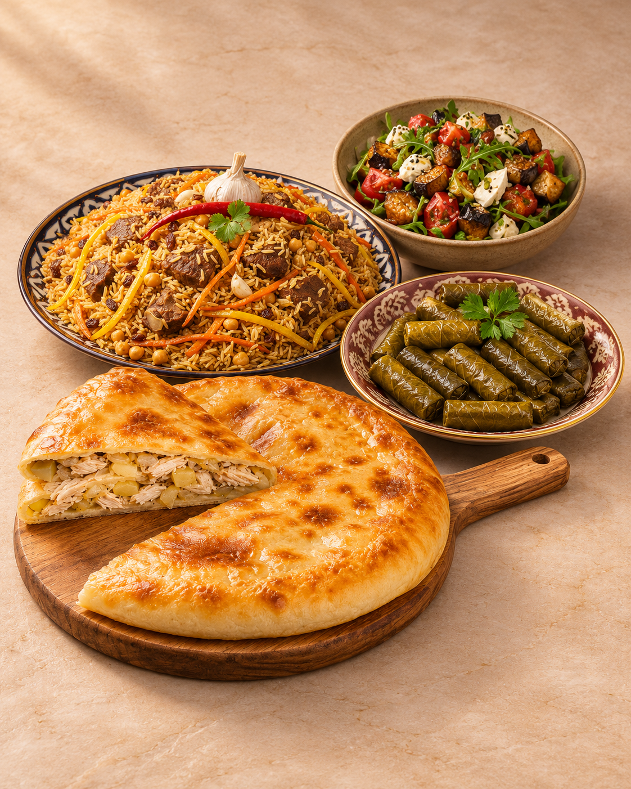

Чуду, выпечка, шаурма, пицца, супы, готовые блюда и домашние замороженные заготовки.

Домашние блюда, выпечка, горячее и заготовки — выбирайте категорию или воспользуйтесь поиском.
Даргинские и другие чуду с мясом, творогом, картошкой, зеленью и тыквой.
Пироги, блины, пирожки, кайнары, лепёшки и другая свежая выпечка.
Шаурма, наггетсы, картофель фри и другие блюда для быстрого перекуса.
Пицца 33 см с разными начинками — выбирайте любимый вариант.
Пельмени, манты, хинкали и другие домашние заготовки на заказ.
Горячие домашние супы и супы-пюре на каждый день.
Плов, хинкал, куры гриль и другие готовые блюда для домашнего стола.
Домашние салаты и закуски из свежих овощей.